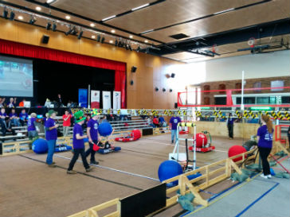
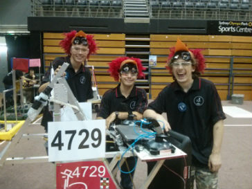

Welcome!

Welcome to the Experimental Mayhem Unit (EMU) FIRST Robotics Competition team at UNSW! FIRST is a US organisation intended to inspire young people in the fields of science, technology, engineering and mathematics, by engaging them in exciting robotics programs with the aid of university and industry mentors. The EMUs were one of the first FRC teams formed in Australia. For the past three years we have competed in both the FRC Duel Down Under and FTC, building robots big and small to complete various challenges. For the first time this year, Australia hosted an FRC regional and we were one of the participating teams. Our team of 15 students is exposed to industry fields such as Mechanical Engineering, Electrical Engineering , Software Design and Business Management.
Information
UNSW FRC is based in an electrical engineering lab within the university. It is free to join, aimed at ages 14-18 and welcomes students from near and far. The weekly meeting is held after school from 5pm - 8pm on Wednesdays. It's a sport for the mind, challenging you to design, build and achieve things you never thought you could. If you are interested, please fill in this form and we'll get back to you soon!
"FIRST has helped me go further in my knowledge of engineering, software and computer science than I would have ever expected. I have been doing things that other people in my year would never experience. I look forward to all the competitions and the spirit at the competitions is amazing." -Cameron, Mech subteam
Contact
unswfrc@gmail.com
Links
Activities
Students participating in FRC work with professional engineers and university students to develop their skills and create a robot that will compete in teams of robots pitted against each other in June each year! There are various areas to be involved in: Mechanical, Electrical, Software and we are looking for anyone with interests in Communications, Graphic Design and Business Management.
"FIRST has inspired me to be more involved in my family and has taught me lot about gracious professionalism and team work. Over the last three years, I've learnt so much about engineering and robotics- more than I thought I ever would" -Phoebe, Elec subteam
